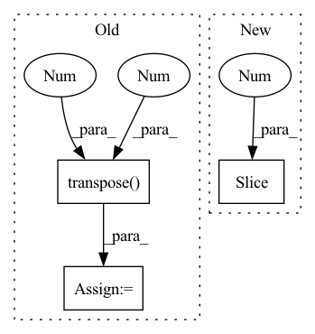

Pattern ID :1730
Before Change
)
// bchq -> b(hc)1q
// print(hidden_state.shape, "hidden_state")
hidden_state = hidden_state.transpose(1 , 2 )
hidden_state = hidden_state.reshape(batch_count, self.embed_count, 1, -1)
hidden_state = self.out_proj.forward(hidden_state)
// print(hidden_state.shape, "hidden_state")
return hidden_stateAfter Change
attention_weights,
values
)
shape = attention_output.shape[:2 ] + (self.embed_count,)
attention_output = attention_output.reshape(shape)
attention_output = self.out_proj.forward(attention_output)
return attention_outputIn pattern: SUPERPATTERN
Frequency: 3
Non-data size: 3
Instances Fragment ID: 6797957
Project Name: kuprel/min-dalle
Commit Name: c936d261021f0f38d064e146a2167cf3daeeb0db
Time: 2022-06-27
Author: brkuprel@gmail.com
File Name: min_dalle/models/dalle_bart_encoder_torch.py
M Class Name: AttentionTorch
N Class Name: AttentionTorch
M Method Name: forward(5)
N Method Name: forward(5)
M Parent Class: nn.Module
N Parent Class: nn.Module
M File Name: min_dalle/models/dalle_bart_encoder_torch.py
N File Name: min_dalle/models/dalle_bart_encoder_torch.py
M Start Line: 42
M End Line: 82
N Start Line: 43
N End Line: 61
Before Change
// get generator output and get mpp loss
logits = self.transformer(masked_input, **kwargs)
mpp_loss = F.cross_entropy(
logits.transpose(1 , 2 ) ,
labels,
)
After Change
// get generator output and get mpp loss
cls_logits = self.transformer(masked_input, mpp=True, **kwargs)
logits = cls_logits[:,1 :,:]
mpp_loss = self.loss(logits, img, mask)
Fragment ID: 6797935
Project Name: lucidrains/vit-pytorch
Commit Name: a0a4fa5e7dcca2ce7ad9cd26d7c20544552c00ef
Time: 2021-02-09
Author: zackankner@gmail.com
File Name: vit_pytorch/mpp_pytorch.py
M Class Name: MPP
N Class Name: MPP
M Method Name: forward(2)
N Method Name: forward(2)
M Parent Class: nn.Module
N Parent Class: nn.Module
M File Name: vit_pytorch/mpp_pytorch.py
N File Name: vit_pytorch/mpp_pytorch.py
M Start Line: 80
M End Line: 88
N Start Line: 59
N End Line: 92
Before Change
seq_length = seg.size(1)
device = seg.device
emb = self.pe[: seq_length].transpose(0 , 1 )
return emb.to(device)
After Change
emb = torch.zeros(batch_size, seq_length, self.emb_size)
for i in range(batch_size):
emb[i, :no_pad_num[i], :] = self.emb[2: no_pad_num[i]+2 ]
return emb.to(device)
Fragment ID: 6797932
Project Name: tencent/tencentpretrain
Commit Name: 2bc6d47065d7a5e6907d449cf5114248000274fe
Time: 2022-12-16
Author: 40569026+JINGZIjingzi@users.noreply.github.com
File Name: tencentpretrain/embeddings/sinusoidalpos_embedding.py
M Class Name: SinusoidalposEmbedding
N Class Name: SinusoidalposEmbedding
M Method Name: forward(3)
N Method Name: forward(3)
M Parent Class: nn.Module
N Parent Class: nn.Module
M File Name: tencentpretrain/embeddings/sinusoidalpos_embedding.py
N File Name: tencentpretrain/embeddings/sinusoidalpos_embedding.py
M Start Line: 45
M End Line: 47
N Start Line: 55
N End Line: 68